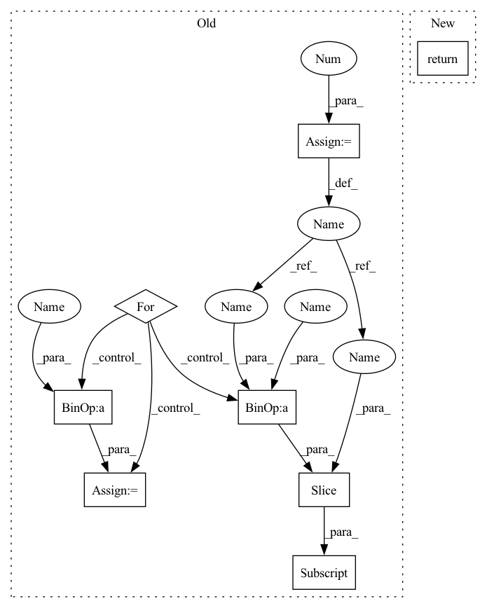

Pattern ID :38302
Before Change
lengths_list: List[int] = self.lengths().tolist()
N = max(lengths_list) if desired_length is None else desired_length
offset = 0
values = []
for length in lengths_list:
value = self.values()[offset : offset + length]
if length <= N:
padding_tensor = torch.full(
[N - length ], padding_value, device=self.values().device
)
value = (
torch.cat((padding_tensor, value), 0)After Change
lengths_list: List[int] = self.lengths().tolist()
N = max(lengths_list) if desired_length is None else desired_length
return torch.ops.fbgemm.jagged_to_padded_dense(
self.values(), [self.offsets()], [N], padding_value
)
In pattern: SUPERPATTERN
Frequency: 3
Non-data size: 8
Instances Fragment ID: 109560997
Project Name: pytorch/torchrec
Commit Name: 52ddfd407a0e505682a053007893b3c24a158afa
Time: 2022-06-15
Author: joshuadeng@fb.com
File Name: torchrec/sparse/jagged_tensor.py
M Class Name: JaggedTensor
N Class Name: JaggedTensor
M Method Name: to_padded_dense(3)
N Method Name: to_padded_dense(5)
M Parent Class: Pipelineable
N Parent Class: Pipelineable
M File Name: torchrec/sparse/jagged_tensor.py
N File Name: torchrec/sparse/jagged_tensor.py
M Start Line: 321
M End Line: 378
N Start Line: 360
N End Line: 363
Before Change
return self._solution
def vjp(self, vector):
start = 0
ret = torch.zeros_like(self._solution)
for size in _partition(self._solution):
end = start + size
if self.regularization == "l2":
val = 1.0 / size
else:
val = torch.softmax(self.s[start:end] , dim=0)
ret[start:end] = val * torch.sum(vector[start:end])
start = end
return retAfter Change
if self.regularization == "l2":
return isotonic_l2_backward_cpu(self.s, self._solution, vector)
else:
return isotonic_kl_backward_cpu(self.s, self._solution, vector)
def _inv_permutation(permutation): Fragment ID: 109560995
Project Name: teddykoker/torchsort
Commit Name: 2526a5f4a6b22c24e6233522af604769c8d96ed1
Time: 2021-03-21
Author: teddy.koker@gmail.com
File Name: torchsort/ops.py
M Class Name: Isotonic
N Class Name: Isotonic
M Method Name: vjp(2)
N Method Name: vjp(2)
M Parent Class:
N Parent Class:
M File Name: torchsort/ops.py
N File Name: torchsort/ops.py
M Start Line: 139
M End Line: 149
N Start Line: 142
N End Line: 148
Before Change
lengths_list: List[int] = self.lengths().tolist()
N = max(lengths_list) if desired_length is None else desired_length
offset = 0
values = []
for length in lengths_list:
value = self.values()[offset : offset + length]
if length <= N:
padding_tensor = torch.full(
[N - length], padding_value, device=self.values().device
)
value = (
torch.cat((padding_tensor, value), 0)After Change
lengths_list: List[int] = self.lengths().tolist()
N = max(lengths_list) if desired_length is None else desired_length
return torch.ops.fbgemm.jagged_to_padded_dense(
self.values(), [self.offsets()], [N], padding_value
)
Fragment ID: 109560992
Project Name: facebookresearch/torchrec
Commit Name: 52ddfd407a0e505682a053007893b3c24a158afa
Time: 2022-06-15
Author: joshuadeng@fb.com
File Name: torchrec/sparse/jagged_tensor.py
M Class Name: JaggedTensor
N Class Name: JaggedTensor
M Method Name: to_padded_dense(3)
N Method Name: to_padded_dense(5)
M Parent Class: Pipelineable
N Parent Class: Pipelineable
M File Name: torchrec/sparse/jagged_tensor.py
N File Name: torchrec/sparse/jagged_tensor.py
M Start Line: 321
M End Line: 378
N Start Line: 360
N End Line: 363